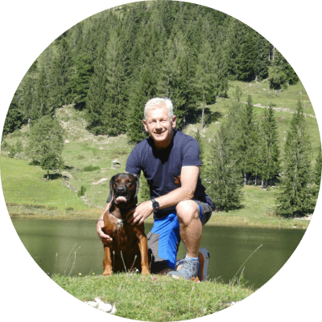

Die Dorn-Methode lernte ich aus eigener Leidenserfahrung kennen. Als langjähriger Ausbilder von Polizeihunden war ich immer wieder mit Wirbelsäulenproblemen behaftet und ging deshalb zum Chiropraktiker, nachdem alle anderen schulmedizinischen Methoden erfolglos blieben. Hier fand ich Hilfe, aber die Nachteile und Risiken der Chiropraktik veranlassten mich, nach alternativen Methoden zu graben.
Und so entdeckte ich die Geschichte des Sägewerksbesitzer Dieter Dorn, lernte zunächst die empfohlenen Selbsthilfeübungen aus dem Internet und den Büchern, die über die Methode Dorn geschrieben wurden, und konnte feststellen, dass diese einfachen Übungen doch tatsächlich Schmerzfreiheit schafften und das ohne Kraftanstrengung, nur mit dem einfachen Trick, die Wirbel und Gelenke in Bewegung zu bringen, um dann einen Impuls zu setzen. Das half!
Weitere Recherchen im Internet führten mich dann zum gemeinnützigen RückGrad e.V., eine Akademie, Berufsverband, Selbsthilfeorganisation, Gesundheitssportvereins und wie ich dann später feststellte, eine große Familie, die es sich zum Ziel gesetzt hat, Menschen mit Rücken- und Gelenkproblemen zu helfen. Den beiden Akademieleitern Corinna Großer-Wohlfeil und Joachim Wohlfeil ist es gelungen, einen neuen Gesundheitsberuf ins Leben zu rufen, der bei den Ämtern Anerkennung fand. Der Dornmassagepraktiker, mittlerweile erweitert auf den ganzheitlichen Gesundheitsberater, um das Spektrum der Tätigkeit zu vergrößern, war geboren.
Ich besuchte dann kurzerhand einen Grundkurs in Würzburg an der Berufsfachschule und war begeistert von der Arbeit. Persönliche Umstände verhinderten jedoch, dass ich die Berufsausbildung weiter vorangetrieben habe. Ich wandte die Methode bei meinen Familienmitgliedern mit großem Erfolg an und nutzte die Eigenübungen für mich selbst. Der Wunsch nach mehr blieb aber immer in meinem Innern verankert.
Im Mai 2014 war es endlich soweit: Ich absolvierte die Berufsausbildung zum »Ganzheitlichen Gesundheitsberater & Massagepraktiker« - eine Ausbildung von Joachim Wohlfeil mit viel Sachkompetenz und Einfühlvermögen vermittelt -, habe mein Gesundheitswissen unglaublich erweitern und die Dornanwendungen perfektionieren können, erlernte die Breuß-Massage, Ayurveda- und Honigmassage, sowie das Smisek-Spiralmuskeltraining. Ich wurde vertraut mit den Grundsätzen der Entsäuerungs- und Entschlackungsmethode von Peter Jentschura und weitete mein Angebot des bewussten Wanderns auf Gesundheitswanderungen aus.
Als Gesundheitsberater und Massagepraktiker informiere, berate, begleite, behandle und leite ich zur Selbsthilfe an. Ich arbeite mit ganzheitlichen Techniken zur Entspannung, Regeneration, Gesundheitsförderung und Behandlung von Körper, Geist und Seele. Gesundheitsberater werden von Gesundheitsämtern in ganz Deutschland anerkannt.